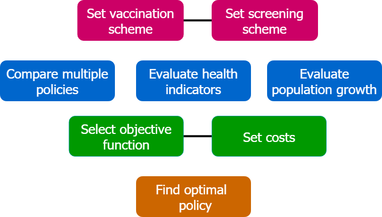

Simulation tool for cervical cancer policy evaluation
Cervical cancer (CC) is the second leading cause of cancer-related deaths among women, caused most commonly by Human Papillomavirus (HPV) infection.
The proper definition of public health policies for prevention and surveillance is of paramount importance to ensure cost-effective disease control strategies are deployed, which make the best usage of the limited available resources.
We propose a compartmentalized epidemiological simulation model based on differential equations, which represents population dynamics, HPV transmission within the population, likelihood of infection clearance, virus induced appearance of precancerous lesions and eventually of CC, as well as the immunity gained with vaccination and the likelihood of early detection provided by screening policies.
Now you are able to evaluate different policies against CC. It is possible to set the parameters of the model, evaluate vaccination and screening schemes and obtain the optimal policy subject to certain restrictions and under a selected objective function.
